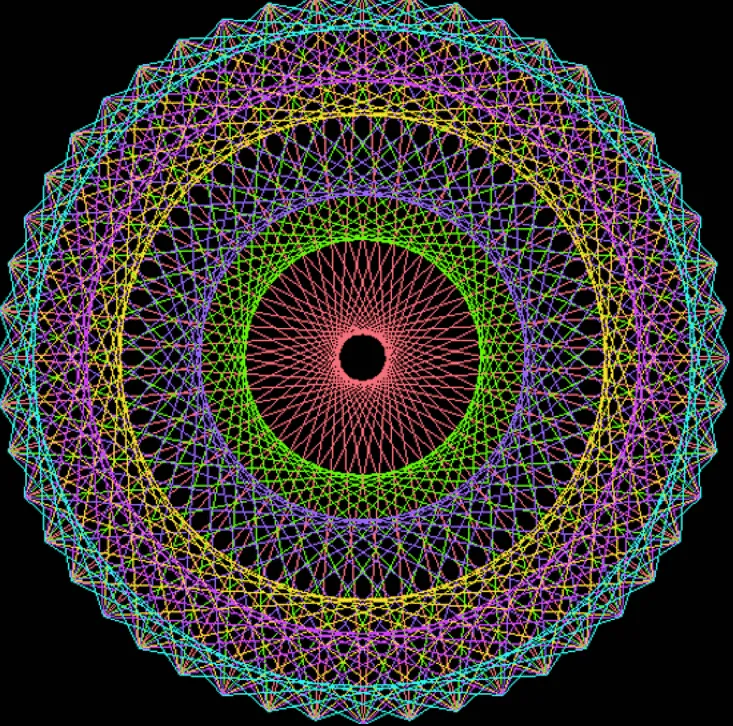
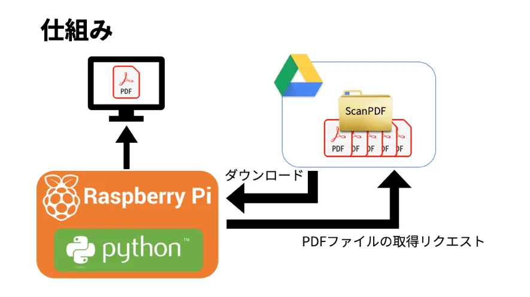
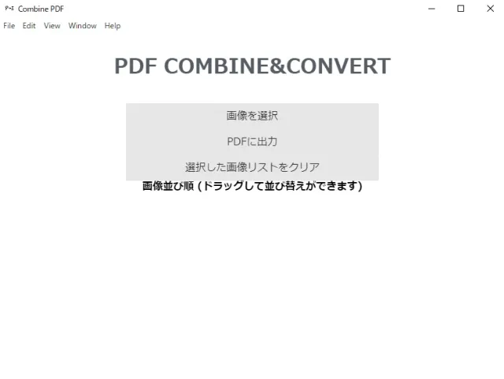

About me
- seigo2016
- student
My Skill
Python
メイン言語.
WebアプリやIoTデバイスの制御,クローラーや画像処理,Botなどで幅広く使用.
ちょっとしたツールやプロトタイプはとりあえずPythonでという意識.
WebアプリやIoTデバイスの制御,クローラーや画像処理,Botなどで幅広く使用.
ちょっとしたツールやプロトタイプはとりあえずPythonでという意識.
Go
デジタルサイネージv2などで使用.
JavaScript
TypeScriptを使い始めるまで,Webアプリの開発に使用していた.
TypeScript
糸かけシミュレーターなどのWebアプリの開発に使用.
HTML5
WebアプリやWebサイトの開発で使用.
CSS3
Webアプリやサイトの開発で使用.
SemanticUIやUIKit,PureCSSなどのフレームワークも触ったことがある.
SemanticUIやUIKit,PureCSSなどのフレームワークも触ったことがある.
Certification
- 日本漢字能力検定2級
- 実用英語技能検定準2級
- 情報検定 情報活用試験1級
- 情報検定情報システム試験基本スキル・プログラミングスキル プログラマ認定
- ITパスポート試験
Achievement
- たのしいmicro:bitコンテスト2019 特別賞
- U22プログラミングコンテスト2019 入賞・日本事務器賞
- みんなのラズパイコンテスト RaspberryPi財団賞
Internship
- 株式会社Prokids 2019/10 - 2021/03
- 株式会社Armoirs 2020/10 - 2021/03
Project

糸かけシミュレーター
糸かけ曼荼羅の制作を支援するソフトウェア。配色や形状の細かなシミュレーションが可能。

Digital Sigange v3
Raspberry PiとDropboxを使用して，掲示板をデジタル化したデジタルサイネージ。

試薬一括検索サイト
複数の試薬販売メーカーのサイトから目的の試薬を一括で検索できるサイト

Image2PDF Combining&Converter
写真を1つのPDFファイルに変換，結合するソフトウェア

BFV LeadrerBoard
FPSゲームBFVのAPIから情報を取得し，いくつかの情報をピックアップして表示するサイト。

スマートロック with Raspberry Pi
既存のドアの鍵の開け閉めをスマートフォンから操作できる「スマートロック」にするシステム。

PS2JPC-BOT
PCゲーム PlanetSide2の非公式JPコミュニティで運用中の管理Bot。役職管理やゲーム内イベント告知，サーバー管理等の機能を実装。

戦車プラモデルのラジコン化
タミヤの1/35戦車プラモデル(M1A1)にRaspberryPi zero WHを搭載。
Xboxコントローラーでラジコンと同じように操作できる。
サーボモーターで砲塔の旋回も可能。

Presentation Support System
プレゼンテーションを更に面白く，便利に行うためのツール。
スライド上にリアルタイムでコメントを流すシステムを実装。

球体ロボット
プラスチック球の中にRaspberryPi zero WHを搭載し，市販品の球体ロボット「Sphero」のような球体ロボット。
Xboxコントローラーで操作可能。

殺虫剤遠隔噴霧車
遠隔操作で殺虫剤を噴霧するロボット(?)。